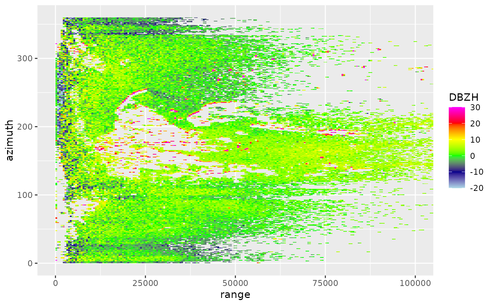
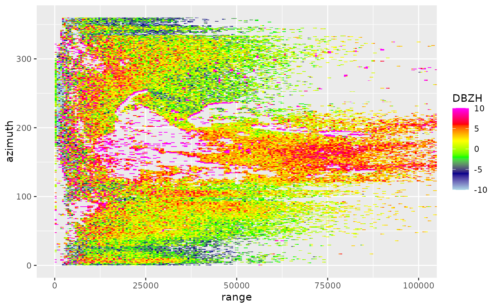
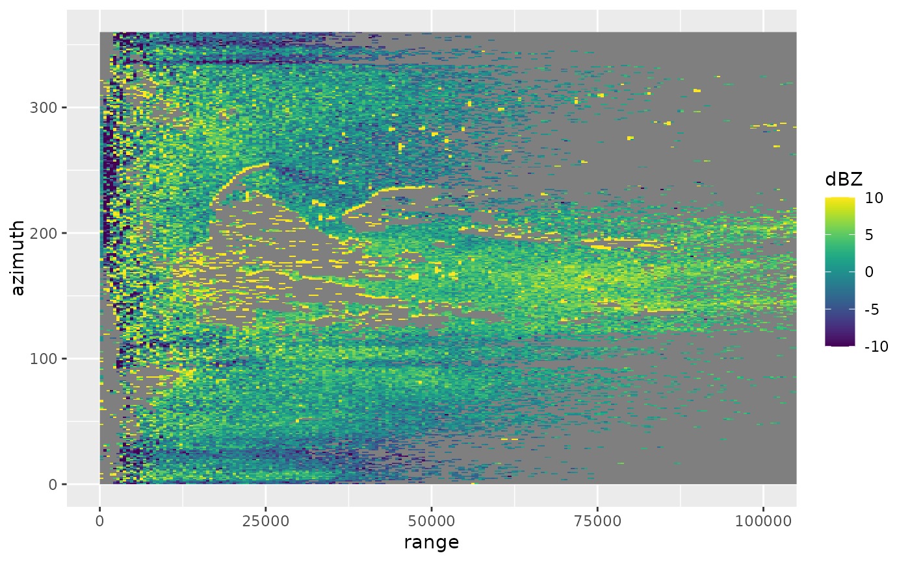

Plots a scan (scan) in polar coordinates. To plot in Cartesian coordinates,
see project_as_ppi().
Arguments
- x
A
scanobject.- param
Character. Scan parameter to plot, e.g.
DBZHorVRADH. Seesummary.param()for commonly available parameters.- xlim
Numeric vector of length 2. Range of x values (range, distance to radar) to plot.
- ylim
Numeric vector of length 2. Range of y values (azimuth) to plot.
- zlim
Numeric vector of length 2. The range of parameter values to plot. Defaults to parameter specific limits for plotting, not full range of data.
- na.value
Character.
ggplot2::ggplot()parameter to set the color ofNAvalues.- ...
Arguments passed to
ggplot2::ggplot().
Details
Available scan parameters for plotting can by printed to screen
by summary(x). Commonly available parameters are:
DBZH,DBZ: (Logged) reflectivity factor (dBZ)TH,T: (Logged) uncorrected reflectivity factor (dBZ)VRADH,VRAD: Radial velocity (m/s). Radial velocities towards the radar are negative, while radial velocities away from the radar are positiveRHOHV: Correlation coefficient (unitless). Correlation between vertically polarized and horizontally polarized reflectivity factorPHIDP: Differential phase (degrees)ZDR: (Logged) differential reflectivity (dB) The scan parameters are named according to the OPERA data information model (ODIM), see Table 16 in the ODIM specification.
Examples
# Plot reflectivity
plot(example_scan, param = "DBZH")

# \donttest{
# Change the range of reflectivities to plot, from -10 to 10 dBZ
plot(example_scan, param = "DBZH", zlim = c(-10, 10))

# Change the scale name, change the color palette to Viridis colors
plot(example_scan, param = "DBZH", zlim = c(-10, 10)) +
viridis::scale_fill_viridis(name = "dBZ")
#> Scale for fill is already present.
#> Adding another scale for fill, which will replace the existing scale.

# }